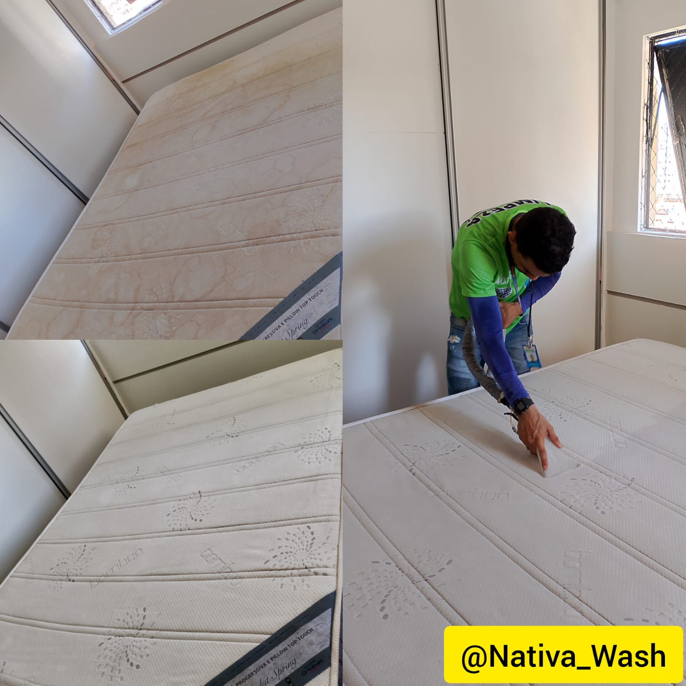

Higienização profissional em Maceió
Seu estofado novo de novo
Removemos manchas, ácaros e odores de sofás, colchões, tapetes e estofados automotivos — com a mesma técnica que já conquistou mais de 305 avaliações 5 estrelas em Maceió.
★★★★★
5.0 · +305 avaliações no Google
Atendimento: domingo, 9h às 13h · segunda a sexta, 7h às 17h · sábado, 9h às 14h

Marcondes higienizando um colchão agora em Maceió